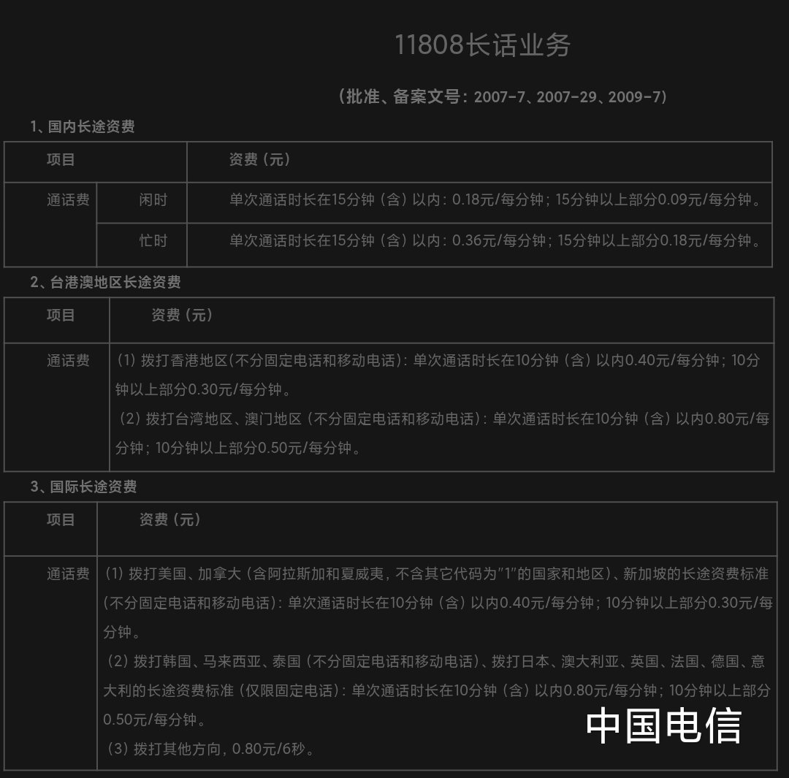
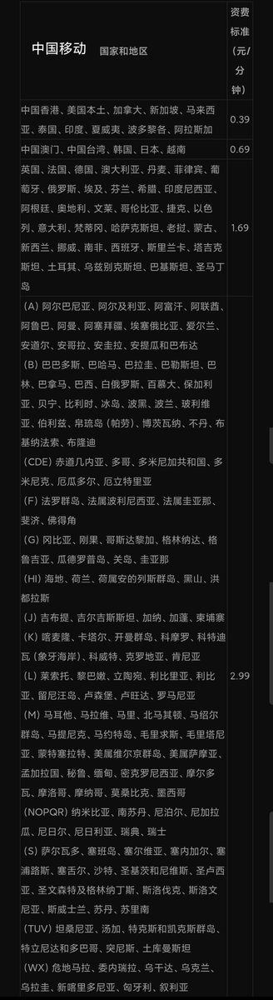
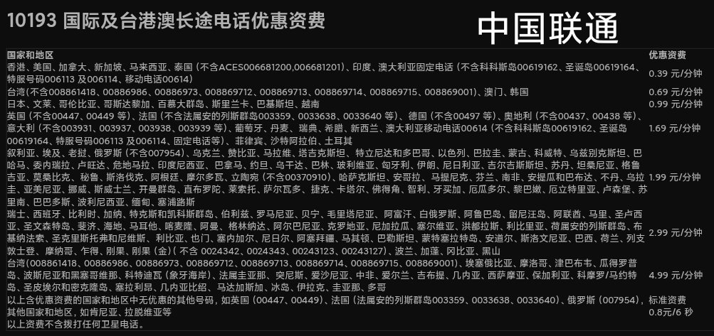

在中国内地拨打境外电话，其实三大运营商都提供了IP电话：中国电信11808、中国移动17951、中国联通10193。
实测下来会比IDD要省不少，用法就是在要打的号码前加拨5位号码，比如使用中国电信拨打香港汇丰：118080085222333322。
至于WeChat Out等网络电话，个人认为打欧美比亚太便宜些，以三大运营商为例中国香港0.39/分钟、中国澳门和台湾0.69/分钟，远远比微信的通话费用要便宜很多。当然要使用该服务，就得把微信绑定到境外手机号，从WeiXin切换到WeChat。
不过，如果你和奶昔论坛的奶友一样也玩eSIM，那选择的方案就多多了。可以考虑花5刀开个Tello美国电话卡，全程国内IP+地址直接注册，不仅包含62个地区每月100分钟通话，还可以顺便开个Google Voice（GV）拨打美国和加拿大（+1）完全免费！
最后希望这篇推文能帮到在中国内地拨打跨国电话的普通人，有时候直接给汇丰香港打电话每分钟还能便宜0.1。当然我知道有些人会说汇丰中国转接，那个通话质量确实很操蛋，但也只对Premier（卓越理财）以上的客户提供。
实测下来会比IDD要省不少，用法就是在要打的号码前加拨5位号码，比如使用中国电信拨打香港汇丰：118080085222333322。
至于WeChat Out等网络电话，个人认为打欧美比亚太便宜些，以三大运营商为例中国香港0.39/分钟、中国澳门和台湾0.69/分钟，远远比微信的通话费用要便宜很多。当然要使用该服务，就得把微信绑定到境外手机号，从WeiXin切换到WeChat。
不过，如果你和奶昔论坛的奶友一样也玩eSIM，那选择的方案就多多了。可以考虑花5刀开个Tello美国电话卡，全程国内IP+地址直接注册，不仅包含62个地区每月100分钟通话，还可以顺便开个Google Voice（GV）拨打美国和加拿大（+1）完全免费！
最后希望这篇推文能帮到在中国内地拨打跨国电话的普通人，有时候直接给汇丰香港打电话每分钟还能便宜0.1。当然我知道有些人会说汇丰中国转接，那个通话质量确实很操蛋，但也只对Premier（卓越理财）以上的客户提供。


